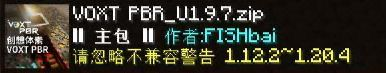

资源包结构和框架搭建
在资源包的世界中，所谓的“框架搭建”不过是创建文件夹，以便让你的资源被游戏正确识别。
首先我们需要新建一个空文件夹，然后在文件夹内准备一些东西：
pack.png这一张图片是你的资源包显示的“名片”。
 由本文作者创作的 VOXT PBR 纹理包
显示在最左边的就是pack.png图片，这一张图片通常为 64x，128x，256x 等。pack.mcmeta该文件本质上是一个 json 文件，可以直接使用记事本、VSCode 等软件编辑。他的内容一般是：
其中pack_format所对应的是所支持的版本。
我们一般使用的是 15，该数据并不会影响资源包的加载。assets文件夹这是用于储存资源包内容的文件夹，你的所有文件几乎都在这里面。
minecraft文件夹该文件夹位于
.minecraft/assets内，其名字实际上是命名空间 ID，原版的命名空间就叫minecraft:，后面会讲到该层的其他用法。
纹理
在 .minecraft/assets/minecraft 文件夹内就会储存纹理文件，存于该部分的文件可以在原版包内找到相同路径，解压后放进该文件夹即可。
至此，你拥有了一个完整的资源包文件，不过你并没有对他进行任何改动，所以你看到的都是原版的样子。
你的文件夹内结构，应该是这个样子：
└─ resourcepacks
└─ <资源包名称 | 资源包名称.zip>
├─ assets
│ ├─ minecraft
│ │ ├─ textures
│ │ │ ├─ block
│ │ │ │ └─ <方块纹理文件>
│ │ │ ├─ item
│ │ │ │ └─ <物品纹理文件>
│ │ │ ├─ models
│ │ │ │ └─ <盔甲纹理文件>
│ │ │ └─ ...
│ │ │ └─ <其他纹理文件>
│ │ └─ <其他自定义资源>
│ └─ <其他模组对应的文件夹>
├─ pack.mcmeta
└─ pack.png
在下一章中，我们将会形象化你的创作思路，并且使用工具来制作你的第一张纹理贴图。
Last modified: 28 February 2025